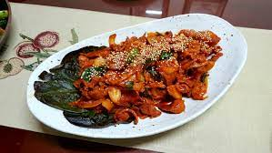

Spicy Korean BBQ

Description
Another goated dish. This was an all time favorite time dish of mine growing up. Just try it.
Ingredients
- Pork (300g)
- Onion (1)
- Green onion (1)
- Minced garlic (2 spoons)
- Hot chili paste (3 spoons)
- Hot chili powder (1 big spoon)
- Pepper
- Mirim (2 spoons)
- Soy sauce (4 spoons)
- Honey (3 spoons)
Steps
- Make the spicy seasoning as per the portions above, and let the pork marinate in it.
- Heat up a pan and put some cooking oil on. Cook the meat on medium-heat.
- Once the meat is cooked, put the veggies in and cook together.
- Put in a spoon of sesame oil. Add chopped peppers if you'd like.